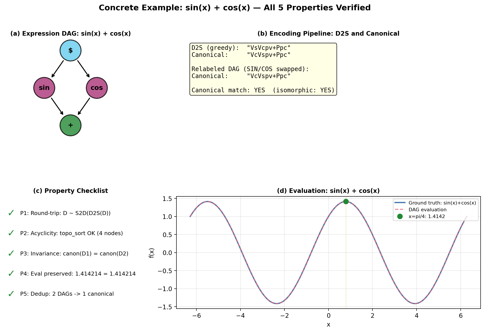
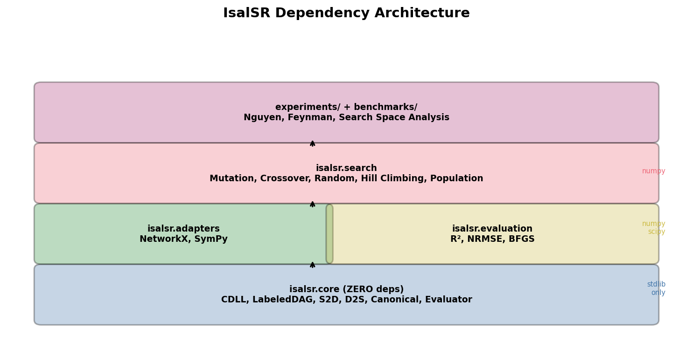

How It Works
IsalSR encodes symbolic regression expression DAGs as instruction strings using a two-tier token encoding and a circular doubly linked list with two pointers.
The Core Idea
Mathematical expressions in symbolic regression are naturally represented as labeled directed acyclic graphs (DAGs) where each node carries an operation type (ADD, SIN, MUL, …) and directed edges encode data flow. IsalSR provides a bijective mapping between these DAGs and instruction strings, extending the IsalGraph framework from unlabeled graphs to labeled DAGs.
Two-Tier Token Encoding
Single-character tokens for pointer movement and edge creation.
Two-character compound tokens (V+label) for labeled node insertion.
The tokenizer disambiguates by context.
DAG Constraint
Before adding any edge via C/c, the system checks for cycles
via BFS reachability. If a cycle would result, the instruction is silently skipped.
Node insertions (V/v) never create cycles.
Commutative Encoding
Non-commutative binary ops are decomposed: SUB(x,y) = ADD(x, NEG(y)), DIV(x,y) = MUL(x, INV(y)). This makes all binary ops except POW commutative, eliminating operand-order ambiguity from the canonical form.
Edge Semantics
An edge u→v means “u provides input to v” (data flow direction). For sin(x): edge x→sin. For x+y: edges x→+ and y→+.
The Instruction Set
The IsalSR alphabet consists of 31 tokens: 7 single-character tokens and 24 two-character compound tokens. The configurable operation set allows experiments to select subsets via YAML configuration.
Movement & Structure Tokens
| Token | Type | Description |
|---|---|---|
| N | Movement | Move primary pointer to next node in CDLL |
| P | Movement | Move primary pointer to previous node in CDLL |
| n | Movement | Move secondary pointer to next node in CDLL |
| p | Movement | Move secondary pointer to previous node in CDLL |
| C | Edge | Directed edge primary→secondary (DAG cycle check; no-op if cycle) |
| c | Edge | Directed edge secondary→primary (DAG cycle check; no-op if cycle) |
| W | No-op | Skip (placeholder token) |
Labeled Node Insertion Tokens
Compound tokens: Vℓ inserts a new node with label ℓ and creates
an edge from the primary pointer's node to the new node.
vℓ does the same from the secondary pointer.
| Token | NodeType | Arity | Description |
|---|---|---|---|
| Variadic (commutative, arity ≥ 2) | |||
| V+ | ADD | Variable (≥2) | Sum of all inputs |
| V* | MUL | Variable (≥2) | Product of all inputs |
| Binary (non-commutative) | |||
| V- | SUB | Binary (2) | Subtraction |
| V/ | DIV | Binary (2) | Protected division |
| V^ | POW | Binary (2) | Protected power |
| Unary (single input) | |||
| Vs | SIN | Unary (1) | Sine |
| Vc | COS | Unary (1) | Cosine |
| Ve | EXP | Unary (1) | Protected exponential |
| Vl | LOG | Unary (1) | Protected logarithm |
| Vr | SQRT | Unary (1) | Protected square root |
| Va | ABS | Unary (1) | Absolute value |
| Vg | NEG | Unary (1) | Negation (−x) |
| Vi | INV | Unary (1) | Inverse (1/x, protected) |
| Leaf (no inputs) | |||
| Vk | CONST | Leaf (0) | Learnable constant |
All Vℓ tokens have vℓ counterparts that operate from the secondary pointer.
Total: 12 labels × 2 pointers = 24 compound tokens + 7 single-char = 31 tokens.
Initial State
For m input variables x1, …, xm:
- The DAG contains m VAR nodes (IDs 0, 1, …, m−1), no edges.
- The CDLL contains m entries [x1, x2, …, xm] in order.
- Both pointers (primary and secondary) start on the CDLL node for x1.
Variables are pre-numbered and distinguishable: x1 ≠ x2 under isomorphism. This is the key simplification that allows the canonical string to be computed starting from x1 only.
S2D Walkthrough: String → DAG
Let’s trace the decoding of V+VsCV*Vk starting from one variable x1. This builds the expression sin(x1) + x1 · k.
| # | Token | Action | DAG State | Pointers |
|---|---|---|---|---|
| 0 | — | Initial state | Nodes: {x1}, Edges: {} | π=x1, σ=x1 |
| 1 | V+ | Insert ADD node, edge x1→ADD | Nodes: {x1, +}, Edges: {x1→+} | π=x1, σ=x1 |
| 2 | Vs | Insert SIN node, edge x1→SIN | Nodes: {x1, +, sin}, Edges: {x1→+, x1→sin} | π=x1, σ=x1 |
| 3 | C | Edge π→σ = x1→x1? Self-loop → no-op. Edge sin→+ created | +sin→+ added | π=x1, σ=x1 |
| 4 | V* | Insert MUL node, edge x1→MUL | MUL added with edge from x1 | π=x1, σ=x1 |
| 5 | Vk | Insert CONST node, edge x1→CONST | Final DAG: sin(x1) + x1·k | π=x1, σ=x1 |

D2S: DAG → String
The DAG-to-String (D2S) algorithm encodes a labeled DAG as the shortest possible
IsalSR instruction string. It uses a greedy strategy that, starting from a given
variable node, iteratively selects the cheapest displacement pair (a, b) to
position the pointers, then emits the appropriate V/v
token for each internal node.
The displacement cost is |a| + |b| movement tokens (CDLL traversal distance). D2S enumerates candidate pairs sorted by total cost and selects the first valid pair for each node to insert.

The Canonical String
The canonical string w*D is the lexicographically smallest shortest string among all valid encodings of a DAG D. It is computed by exploring all permutations of internal node ordering (exhaustive) or using efficient pruning strategies (fast canonical with Weisfeiler-Leman hashing).
The canonical string is a complete labeled-DAG isomorphism invariant:
This means all k! equivalent node-numbering schemes for k internal nodes produce the exact same canonical string, collapsing the search space by a factor of k!.